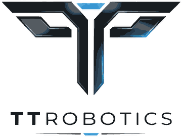

Son güncelleme: 1 Kasım 2026
Bidik, TT Robotics tarafından çocuklar için hazırlanmış bir bilgi işlemsel düşünme oyunudur. Çocukların gizliliğini korumayı temel ilke kabul ederiz. Bu politika hem bidik.tr web sürümü hem de App Store ve Google Play uygulamaları için geçerlidir; farklı olan noktalar ayrıca belirtilmiştir.
Bidik hesap, e-posta, ad ya da giriş istemez; reklam, uygulama içi satın alma ve takip aracı içermez. Oyun tamamen cihazda çalışır. Yalnızca öğretmenin açtığı isteğe bağlı sınıf kodu özelliği internet kullanır ve aşağıda anlatılan, kimlik içermeyen verileri sunucuya gönderir.
Oyuncu adı (takma ad kullanılabilir), kazanılan yıldızlar, seçilen seviye ve ayarlar yalnızca kullanılan cihazın tarayıcısında ya da uygulamasında tutulur. Tarayıcı verileri temizlendiğinde ya da uygulama kaldırıldığında tamamen silinir.
Öğretmen bir sınıf açtığında okulun adı, sınıf ve şube (örneğin "3-A"), öğrenci sayısı ve başlangıç seviyesi kaydedilir; öğretmen sınıfa, sınıf kodu ve kendi belirlediği öğretmen anahtarıyla bağlanır. Öğrenci, öğretmeninin verdiği sınıf koduyla katıldığında şunlar sunucuya gönderilir: sınıf numarası (örneğin 7), seçtiği oyun karakteri, bölüm yıldızları ve ilerlemesi, katılma ve son eşitleme zamanı. Öğrencinin adı, soyadı, e-postası, fotoğrafı, konumu ya da cihaz kimliği alınmaz. Öğrenci cihazı, sunucuya yazabilmek için Google Firebase'in anonim oturum kimliğini kullanır; bu rastgele bir kimliktir ve bir kişiyle ilişkilendirilmez.
Bu veriler Google Firebase (Google LLC) altyapısında, TT Robotics'in yönettiği bir projede saklanır ve yalnızca o sınıfın öğretmeni tarafından, öğrenci numarasıyla görülür. Üçüncü taraflarla paylaşılmaz, reklam ya da profil oluşturma amacıyla kullanılmaz. Aktarım HTTPS ile şifrelidir. Öğretmen ya da veli istediğinde sınıf ya da öğrenci kaydı silinir; kullanılmayan sınıf kayıtları eğitim-öğretim yılı sonunda silinir.
bidik.tr'deki web sürümü, öğrenme araştırması için kimliksiz kullanım kayıtları üretir: oturum başına rastgele bir kimlik, seçilen yaş bandı, cihaz türü, oynanan bölüm, deneme sayısı, sonuç, hata türü, ipucu kullanımı ve süre. Bu kayıtlar oyuncu adı, sınıf kodu, IP adresi ya da kalıcı cihaz kimliği içermez; bir kişiyle ilişkilendirilemez ve yalnızca toplu olarak (örneğin "döngü bölümlerinde ilk denemede başarı oranı") değerlendirilir. Kayıtlar Google Firebase altyapısında saklanır ve araştırma arşivi olarak süresiz tutulur. App Store ve Google Play uygulamalarında bu kayıt kapalıdır.
Uygulamalar (App Store, Google Play): Yazı tipleri ve sesler uygulamanın içindedir. Analitik, reklam ya da takip hizmeti yoktur. Uygulamanın internete bağlandığı tek durum, yukarıda anlatılan sınıf kodu eşitlemesidir (Google Firebase). Öğretmen ve veli ekranlarındaki dış bağlantılar (bidik.tr) bir ebeveyn kapısından geçer ve cihazın tarayıcısında açılır.
Web sitesi (bidik.tr): Yazı tipleri Google Fonts üzerinden yüklenir; bu sırada tarayıcınız Google sunucularına standart bir istek gönderir. Ziyaret sayımı için Umami (Umami Software, Inc.; sunucular Avrupa Birliği'nde) kullanılır. Umami çerez kullanmaz, IP adresini saklamaz ve kişi tanımlamaz; yalnızca sayfa görüntüleme sayısı, cihaz türü, ülke ve geliş kaynağı gibi toplu veriler tutulur. Oyun içinde "oyun başladı", "durak tamamlandı" gibi seyrek ve anonim olaylar sayılır; oyuncu adı, sınıf kodu ya da ilerleme bilgisi hiçbir zaman gönderilmez.
Bunların dışında üçüncü taraf hizmeti, reklam ağı, sosyal medya bağlantısı ya da satın alma yoktur.
Bidik, çocuklardan ad, e-posta ya da başka bir kişisel veri almadan; 6698 sayılı Kişisel Verilerin Korunması Kanunu, Google Play Aile Politikası ve Apple'ın Çocuklar kategorisi kurallarıyla uyumlu olacak şekilde tasarlanmıştır. Sınıf kodu özelliğini yalnızca öğretmen açar; öğrenciler birbirleriyle iletişim kuramaz, içerik paylaşamaz.
Öğretmenler ve veliler, sınıf ya da öğrenci kayıtlarının görülmesini ya da silinmesini istediklerinde aşağıdaki adrese yazabilir; istek en geç 30 gün içinde yerine getirilir. Bu politika değiştiğinde bu sayfada yeni tarihiyle yayımlanır.
Veri sorumlusu: TT Robotics – Tolga Topçubaşı, Ümraniye / İstanbul
Sorularınız için: topcubasitolga@gmail.com

Bidik bir TT Robotics ürünüdür.
© 2026 TT Robotics. Tüm hakları saklıdır.